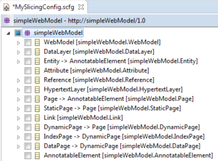

First, select a configuration to edit before slicing.
Afterwards, select the model view tab.
The Model View displays the entire model including its classes, references and attributes. From here it is possible to select Elements and start the slicing process.
It is possible to add a constraint to a selected element by adding it in the "Properties" tab of the element. See Properties View.
In case a reference that contains a constraint will be removed, a warning will be shown.